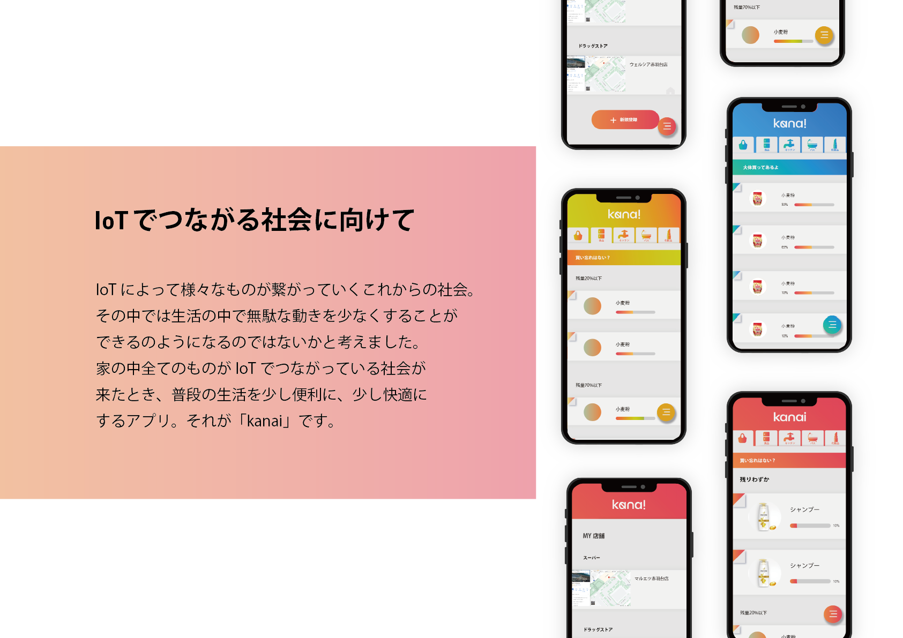
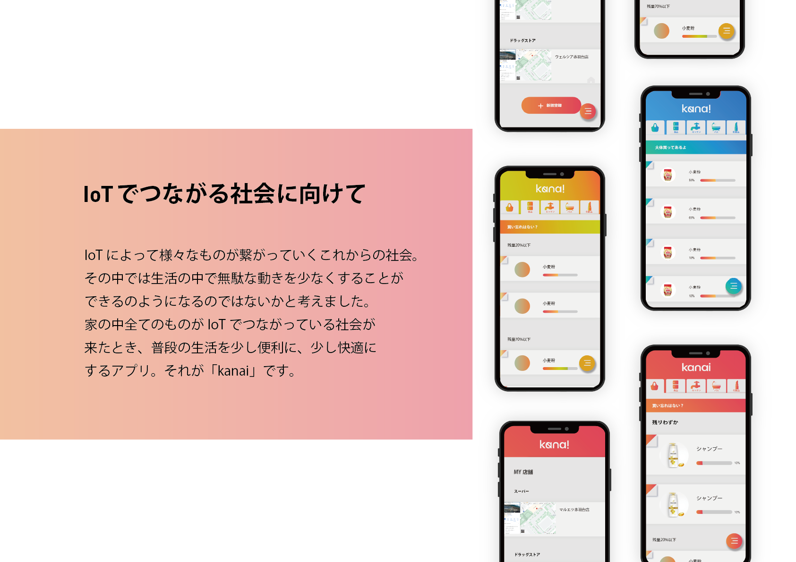

kanai
~
- Ai
- Xd
「kanai」はハンドメイド作品を作る 際に簡単に欲しいパーツを手に入れられ るようなサイトに制作しました。ハンド メイドパーツはカテゴリが多いため、目 的のものを探しにくくなってしまいがち なためわかりやすく目的のものまでたど りつけるサイトになるよう心掛けました。




~
「kanai」はハンドメイド作品を作る 際に簡単に欲しいパーツを手に入れられ るようなサイトに制作しました。ハンド メイドパーツはカテゴリが多いため、目 的のものを探しにくくなってしまいがち なためわかりやすく目的のものまでたど りつけるサイトになるよう心掛けました。
